Patron de Puntos#
import warnings
warnings.filterwarnings('ignore')
import descartes
import numpy as np
import pandas as pd
import matplotlib.pyplot as plt
import geopandas as gpd
import pysal
import seaborn as sbn
import contextily as ctx
from sklearn.cluster import KMeans, DBSCAN
from matplotlib_map_utils.core.north_arrow import NorthArrow, north_arrow
from matplotlib_map_utils.core.scale_bar import ScaleBar, scale_bar
import plotly.express as px
import plotly.graph_objects as go
from matplotlib.patches import Ellipse
pd.set_option('display.max_columns', None)
gdf = gpd.read_file("https://github.com/algarciach/AnalisisGeoespacial/raw/main/Covid19_model/Data/covid19_municipios_antioquia.gpkg")
gdf.info()
Centroides#
points_covid19_antioquia = gdf.copy()
points_covid19_antioquia["geometry"] = gdf.geometry.centroid
points_covid19_antioquia = points_covid19_antioquia.set_geometry("geometry")
print(points_covid19_antioquia.crs)
EPSG:4326
points_covid19_antioquia.info()
points_covid19_antioquia.head()
<class 'geopandas.geodataframe.GeoDataFrame'>
RangeIndex: 125 entries, 0 to 124
Data columns (total 15 columns):
# Column Non-Null Count Dtype
--- ------ -------------- -----
0 codigo_municipio 125 non-null object
1 nombre_municipio 125 non-null object
2 codigo_subregion 125 non-null object
3 nombre_subregion 125 non-null object
4 area_municipio 125 non-null float64
5 altitud 125 non-null float64
6 temperatura 125 non-null float64
7 humedad_relativa 125 non-null float64
8 poblacion 125 non-null int64
9 urbanizacion 125 non-null float64
10 densidad 125 non-null float64
11 muertes_covid19 125 non-null int64
12 recuperados_covid19 125 non-null int64
13 cfr 125 non-null float64
14 geometry 125 non-null geometry
dtypes: float64(7), geometry(1), int64(3), object(4)
memory usage: 14.8+ KB
| codigo_municipio | nombre_municipio | codigo_subregion | nombre_subregion | area_municipio | altitud | temperatura | humedad_relativa | poblacion | urbanizacion | densidad | muertes_covid19 | recuperados_covid19 | cfr | geometry | |
|---|---|---|---|---|---|---|---|---|---|---|---|---|---|---|---|
| 0 | 05001 | MEDELLIN | 01 | VALLE DE ABURRA | 374.834005 | 2059.003077 | 18.203481 | 80.582299 | 2616335 | 0.984199 | 6979.983054 | 10353 | 537645 | 1.889240 | POINT (-75.61104 6.25759) |
| 1 | 05002 | ABEJORRAL | 07 | ORIENTE | 507.141095 | 1947.128522 | 17.845754 | 80.265871 | 21468 | 0.430781 | 42.331415 | 24 | 579 | 3.980100 | POINT (-75.43847 5.80373) |
| 2 | 05004 | ABRIAQUI | 06 | OCCIDENTE | 296.894050 | 2371.335448 | 15.912880 | 85.717115 | 2855 | 0.349912 | 9.616225 | 1 | 78 | 1.265823 | POINT (-76.08598 6.62755) |
| 3 | 05021 | ALEJANDRIA | 07 | ORIENTE | 128.932153 | 1545.100614 | 20.538783 | 80.036523 | 4955 | 0.591726 | 38.431065 | 6 | 175 | 3.314917 | POINT (-75.0906 6.36553) |
| 4 | 05030 | AMAGA | 08 | SUROESTE | 84.132477 | 1513.740970 | 21.093243 | 78.477931 | 32412 | 0.522152 | 385.249562 | 54 | 1440 | 3.614458 | POINT (-75.708 6.03292) |
Para efectos del análisis de eventos, se construye una variable binaria que indica la ocurrencia de un evento crítico. Esta toma el valor de 1 si la tasa de letalidad (CFR) supera el umbral del 3% y 0 en caso contrario.
points_covid19_antioquia["evento_CFR"] = points_covid19_antioquia["cfr"].apply(lambda x: 1 if x > 3 else 0)
points_covid19_antioquia.info()
points_covid19_antioquia["evento_CFR"].value_counts()
<class 'geopandas.geodataframe.GeoDataFrame'>
RangeIndex: 125 entries, 0 to 124
Data columns (total 16 columns):
# Column Non-Null Count Dtype
--- ------ -------------- -----
0 codigo_municipio 125 non-null object
1 nombre_municipio 125 non-null object
2 codigo_subregion 125 non-null object
3 nombre_subregion 125 non-null object
4 area_municipio 125 non-null float64
5 altitud 125 non-null float64
6 temperatura 125 non-null float64
7 humedad_relativa 125 non-null float64
8 poblacion 125 non-null int64
9 urbanizacion 125 non-null float64
10 densidad 125 non-null float64
11 muertes_covid19 125 non-null int64
12 recuperados_covid19 125 non-null int64
13 cfr 125 non-null float64
14 geometry 125 non-null geometry
15 evento_CFR 125 non-null int64
dtypes: float64(7), geometry(1), int64(4), object(4)
memory usage: 15.8+ KB
evento_CFR
0 67
1 58
Name: count, dtype: int64
# + tags=["hide-output"]
%pip install geopandas
%pip install plotly
%pip install matplotlib-map-utils
Visualization#
Dots on Map#
# Extract coordinates from geometry
points_covid19_antioquia["longitude"] = points_covid19_antioquia.geometry.x
points_covid19_antioquia["latitude"] = points_covid19_antioquia.geometry.y
# Filter points with evento_CFR > 3
CFR3_points = points_covid19_antioquia[points_covid19_antioquia["evento_CFR"] == 1]
gdf = gdf.to_crs(epsg=3857)
points = points_covid19_antioquia.copy()
points = gpd.GeoDataFrame(
points,
geometry=gpd.points_from_xy(points.longitude, points.latitude),
crs="EPSG:4326"
).to_crs(epsg=3857)
fig, ax = plt.subplots(figsize=(10, 10))
gdf.boundary.plot(ax=ax, edgecolor='gray', linewidth=1)
points.plot(ax=ax, color='red', markersize=20, alpha=0.6)
bounds = gdf.total_bounds
x_range = bounds[2] - bounds[0]
y_range = bounds[3] - bounds[1]
zoom_out_factor = 0.25 # aumenta el área mostrada en un 25%
ax.set_xlim(bounds[0] - x_range * zoom_out_factor, bounds[2] + x_range * zoom_out_factor)
ax.set_ylim(bounds[1] - y_range * zoom_out_factor, bounds[3] + y_range * zoom_out_factor)
ctx.add_basemap(ax, source=ctx.providers.CartoDB.Positron)
north_arrow(
ax,
location="upper right",
rotation={"crs": "EPSG:3857", "reference": "center"},
scale=0.3,
shadow=False
)
scale_bar(
ax,
location="lower left",
bar={
"projection": 3857,
"length": 5000,
"hide_label": True
}
)
ax.set_axis_off()
ax.set_xticks([])
ax.set_yticks([])
ax.set_frame_on(False)
plt.tight_layout()
plt.show()
Warning: Invalid keys detected (['hide_label']). These will be ignored.

Municipios con CFR > 3#
gdf = gdf.to_crs(epsg=4326)
fig, ax = plt.subplots(figsize=(10, 10))
gdf.plot(ax=ax, color='lightblue', edgecolor='grey', alpha=0.5)
points_covid19_antioquia.plot(
ax=ax, column='evento_CFR', categorical=True, legend=True,
legend_kwds={'title': 'CFR > 3%'},
cmap='Oranges', markersize=50, alpha=0.7
)
plt.show()
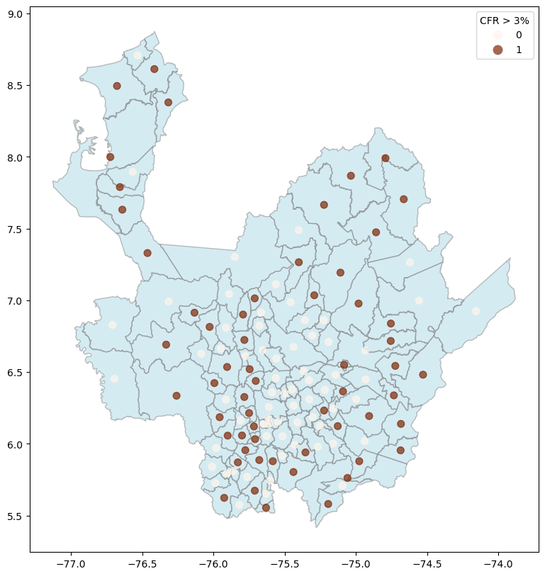
import contextily as ctx
joint_axes = sbn.jointplot(x='longitude', y='latitude', data=CFR3_points, s=6, height=7)
ctx.add_basemap(
joint_axes.ax_joint, crs=CFR3_points.crs,
source=ctx.providers.CartoDB.Positron)
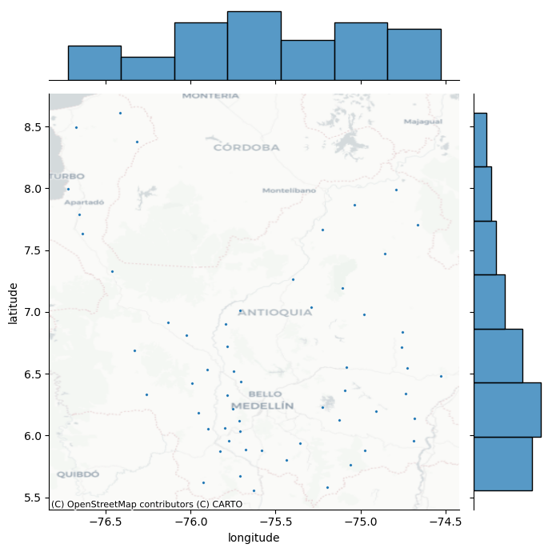
Irregular lattices#
Usaremos las areas de las subregiones para determinar la intensidad de puntos en las zonas
subregiones_antioquia = gdf.dissolve(by="codigo_subregion", as_index=False).reset_index()
ax = CFR3_points.plot.scatter(
x='longitude', y='latitude', s=10,
c='orange', alpha=0.8, figsize=(10, 10)
)
subregiones_antioquia.plot(ax=ax, color='lightgrey', edgecolor='black', alpha=0.3)
ax.set_title('Subregiones con CFR > 3% en Antioquia')
ax.set_xlabel('Longitud')
ax.set_ylabel('Latitud')
ctx.add_basemap(
ax, crs=CFR3_points.crs,
source=ctx.providers.CartoDB.Positron)
plt.show()
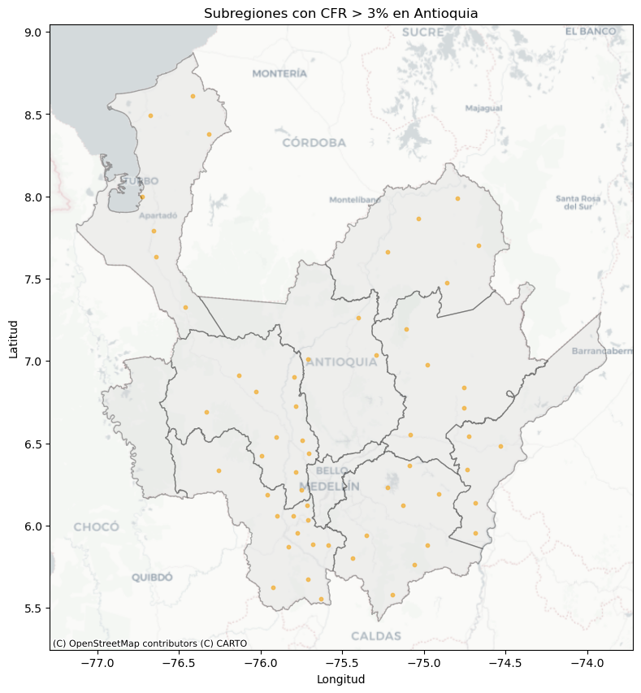
from matplotlib.colors import LinearSegmentedColormap
white_to_tableau_blue = LinearSegmentedColormap.from_list(
"white_blue", ["#ffffff", "#1f77b4"]
)
fig, ax = plt.subplots(figsize=(10, 10))
# Mapa coroplético de tasa de letalidad CFR > 3%
gdf.plot(
ax=ax,
column="cfr",
cmap= "Blues",
legend=True,
edgecolor='white',
alpha=0.9,
linewidth=0.5
)
ctx.add_basemap(
ax,
crs=gdf.crs,
source=ctx.providers.CartoDB.Positron
)
north_arrow(
ax,
location="upper right",
rotation={"crs": "EPSG:4326", "reference": "center"},
scale=0.3,
shadow=False
)
ax.set_axis_off()
plt.tight_layout()
plt.show()

Determinar cuantos municipios con CFR > 3 por subregion
CFR3_points_by_subregion = CFR3_points.groupby('codigo_subregion').size().reset_index(name='count')
suberegiones = subregiones_antioquia.merge(
CFR3_points_by_subregion, on='codigo_subregion', how='left'
)
suberegiones['count'] = suberegiones['count'].fillna(0)
fig, ax = plt.subplots(figsize=(10, 10))
suberegiones.plot(
ax=ax,
column="count",
cmap= white_to_tableau_blue,
legend=True,
edgecolor='white',
alpha=0.9,
linewidth=0.5
)
ctx.add_basemap(
ax,
crs=gdf.crs,
source=ctx.providers.CartoDB.Positron
)
north_arrow(
ax,
location="upper right",
rotation={"crs": "EPSG:4326", "reference": "center"},
scale=0.3,
shadow=False
)
ax.set_axis_off()
plt.tight_layout()
plt.show()

Regular lattices: Hex-binning#
f, ax = plt.subplots(1, figsize=(12, 9))
hb = ax.hexbin(
CFR3_points.longitude, CFR3_points.latitude,
gridsize=50,
linewidths=0,
alpha=0.5,
cmap='viridis_r',
)
ctx.add_basemap(
ax, crs="EPSG:4326",
source=ctx.providers.CartoDB.Positron)
plt.colorbar(hb)
ax.set_axis_off()
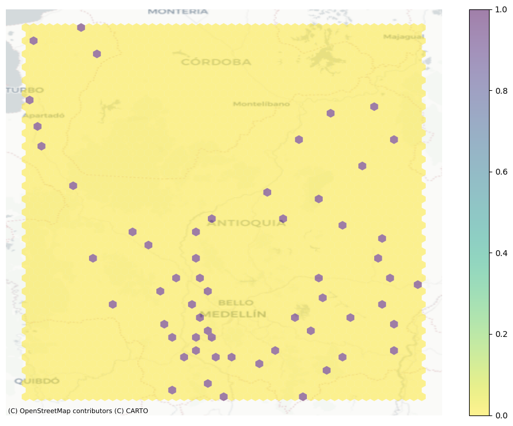
Kernel Density Estimation (KDE)#
f, ax = plt.subplots(1, figsize=(9, 9))
sbn.kdeplot(
x=CFR3_points.longitude, y=CFR3_points.latitude,
fill=True, alpha=0.55, levels=50,
cmap='viridis_r', ax=ax
)
ctx.add_basemap(
ax, crs="EPSG:4326",
source=ctx.providers.CartoDB.Positron)
ax.set_axis_off()
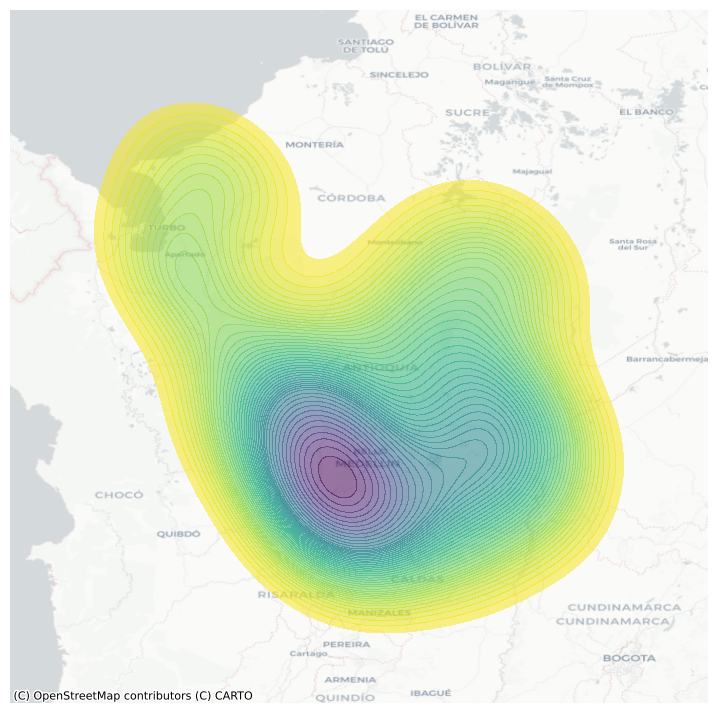
Centrography#
Tendency#
from pointpats import centrography
coords = np.column_stack((CFR3_points.longitude, CFR3_points.latitude))
mean_center = centrography.mean_center(coords)
med_center = centrography.euclidean_median(coords)
joint_axes = sbn.jointplot(
x=CFR3_points.longitude, y=CFR3_points.latitude,
s=10, height=9)
joint_axes.ax_joint.scatter(*mean_center, color='red', marker='x', s=50, label='Mean Center')
joint_axes.ax_marg_x.axvline(mean_center[0], color='red')
joint_axes.ax_marg_y.axhline(mean_center[1], color='red')
joint_axes.ax_joint.scatter(*med_center, color='limegreen', marker='o', s=50, label='Median Center')
joint_axes.ax_marg_x.axvline(med_center[0], color='limegreen')
joint_axes.ax_marg_y.axhline(med_center[1], color='limegreen')
joint_axes.ax_joint.legend()
ctx.add_basemap(joint_axes.ax_joint, crs="EPSG:4326", source=ctx.providers.CartoDB.Positron)
joint_axes.ax_joint.set_axis_off()
plt.show()
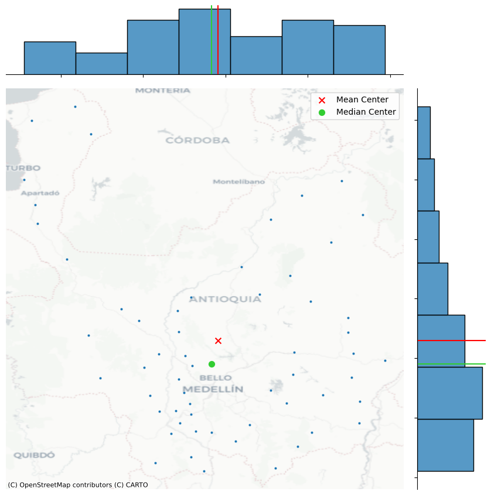
Dispersion#
centrography.std_distance(coords)
np.float64(0.975383555052916)
Standard Deviational Ellipse#
major, minor, rotation = centrography.ellipse(
coords,
)
major, minor, rotation
(np.float64(0.7840363917636705),
np.float64(1.0009044428123037),
np.float64(-0.381593606028805))
# Plot
joint_axes = sbn.jointplot(
x=CFR3_points.longitude, y=CFR3_points.latitude,
s=10, height=9
)
# Add mean center
joint_axes.ax_joint.scatter(*mean_center, color='red', marker='x', s=50, label='Mean Center')
joint_axes.ax_marg_x.axvline(mean_center[0], color='red')
joint_axes.ax_marg_y.axhline(mean_center[1], color='red')
# Add median center
joint_axes.ax_joint.scatter(*med_center, color='limegreen', marker='o', s=50, label='Median Center')
joint_axes.ax_marg_x.axvline(med_center[0], color='limegreen')
joint_axes.ax_marg_y.axhline(med_center[1], color='limegreen')
# Add the ellipse
ellipse = Ellipse(
xy=mean_center,
width=major * 2,
height=minor * 2,
angle=np.rad2deg(rotation), # Convert radians to degrees
edgecolor='blue',
facecolor='none',
linestyle='--',
linewidth=2,
label='Std. Ellipse'
)
joint_axes.ax_joint.add_patch(ellipse)
# Legend
joint_axes.ax_joint.legend()
# Add basemap
ctx.add_basemap(joint_axes.ax_joint, crs="EPSG:4326", source=ctx.providers.CartoDB.Positron)
# Hide axis
joint_axes.ax_joint.set_axis_off()
plt.show()
---------------------------------------------------------------------------
NameError Traceback (most recent call last)
Cell In[32], line 18
15 joint_axes.ax_marg_y.axhline(med_center[1], color='limegreen')
17 # Add the ellipse
---> 18 ellipse = Ellipse(
19 xy=mean_center,
20 width=major * 2,
21 height=minor * 2,
22 angle=np.rad2deg(rotation), # Convert radians to degrees
23 edgecolor='blue',
24 facecolor='none',
25 linestyle='--',
26 linewidth=2,
27 label='Std. Ellipse'
28 )
29 joint_axes.ax_joint.add_patch(ellipse)
31 # Legend
NameError: name 'Ellipse' is not defined

Extent#
print(coords)
[[-75.43847449 5.80372897]
[-75.09059702 6.36553412]
[-75.7080031 6.03292199]
[-74.98127311 6.97769068]
[-75.92459671 5.62395126]
[-75.71594966 6.1214303 ]
[-75.10848962 7.19311041]
[-75.90426747 6.53570773]
[-76.41478301 8.61138712]
[-75.95649246 6.18578361]
[-75.22369249 7.66515825]
[-75.99351498 6.42346364]
[-75.29224952 7.03542947]
[-76.02689633 6.81495037]
[-74.73354817 6.33797388]
[-75.63081024 5.55526547]
[-76.65668414 7.78916729]
[-75.03501878 7.86794983]
[-76.63964213 7.63166564]
[-75.08253096 6.55008115]
[-75.90014678 6.05746868]
[-75.78331099 6.32645515]
[-74.66427699 7.70463362]
[-75.67837372 5.88716956]
[-76.33198554 6.69136668]
[-75.12763646 6.12338072]
[-75.7497221 6.21452562]
[-75.35429023 5.94043468]
[-75.78300046 6.72399093]
[-74.72370656 6.54330091]
[-76.46302608 7.32954 ]
[-75.19457019 5.58127531]
[-76.67699198 8.4937355 ]
[-74.79242149 7.99046768]
[-75.22350906 6.23239637]
[-74.5287421 6.48192227]
[-74.68408347 6.13917534]
[-74.68620541 5.95483902]
[-75.79222753 6.90100051]
[-74.90720525 6.19389245]
[-74.97660919 5.87913421]
[-75.70310727 6.43830041]
[-76.31664143 8.379156 ]
[-75.58330371 5.87898496]
[-75.05934898 5.76250691]
[-75.74580903 6.52016455]
[-75.70979974 5.67375857]
[-75.82871144 5.87106456]
[-75.79966005 6.05834997]
[-75.71033059 7.01369575]
[-76.72380317 7.99837236]
[-76.13318557 6.91391687]
[-76.25906482 6.33534134]
[-75.40094502 7.26540421]
[-74.75459316 6.83825032]
[-75.77620117 5.9559393 ]
[-74.75564986 6.71687047]
[-74.85848879 7.4740075 ]]
convex_hull_vertices = centrography.hull(coords)
print(convex_hull_vertices)
[[-74.68620541 5.95483902]
[-74.5287421 6.48192227]
[-74.66427699 7.70463362]
[-74.79242149 7.99046768]
[-76.41478301 8.61138712]
[-76.67699198 8.4937355 ]
[-76.72380317 7.99837236]
[-76.63964213 7.63166564]
[-76.25906482 6.33534134]
[-75.92459671 5.62395126]
[-75.63081024 5.55526547]
[-75.19457019 5.58127531]]
import libpysal
alpha_shape, alpha, circs = libpysal.cg.alpha_shape_auto(coords, return_circles=True)
alpha_shape
from shapely.geometry import Polygon
# Create GeoSeries for alpha shape and convex hull
gdf_alpha = gpd.GeoSeries([alpha_shape], crs="EPSG:4326")
gdf_hull = gpd.GeoSeries([Polygon(convex_hull_vertices)], crs="EPSG:4326")
#create figure and axis
fig, ax = plt.subplots(1,1, figsize=(10, 10))
# Plot alpha shape green and convex hull blue
gdf_alpha.plot(ax=ax, color='green', edgecolor='green', label='Alpha Shape', alpha=0.2)
gdf_hull.boundary.plot(ax=ax, color='blue', linestyle=':', linewidth=2, label='Convex Hull', alpha=0.5)
# Plot points
ax.scatter(*coords.T, color='k', s=10, label='Points', marker='o')
# Plor circles
for i, circle in enumerate(circs):
label = 'Bounding Circle' if i == 0 else None
ax.add_patch(
plt.Circle(
circle,
radius=alpha,
facecolor='none',
edgecolor='r',
label=label
)
)
# Add basemap
ctx.add_basemap(
ax, crs="EPSG:4326",
source=ctx.providers.CartoDB.Positron)
plt.legend()
plt.show()
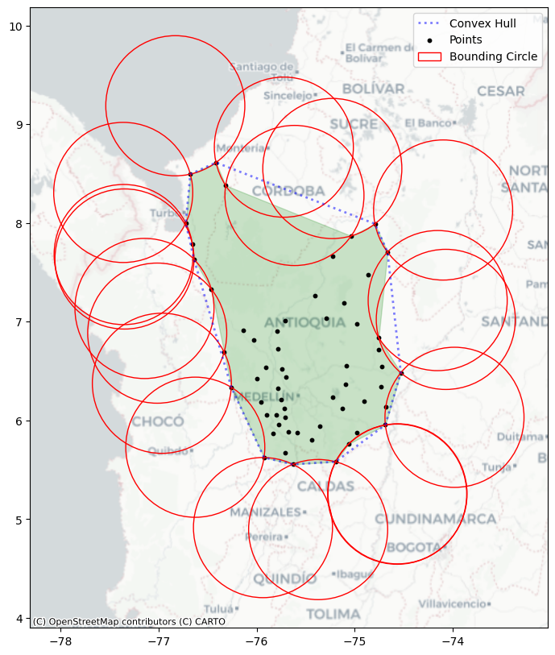
min_rot_rect = centrography.minimum_rotated_rectangle(coords)
min_rect_vertices = centrography.minimum_bounding_rectangle(coords)
(center_x, center_y), radius = centrography.minimum_bounding_circle(coords)
from shapely.geometry import Polygon, Point
from matplotlib.patches import Polygon as MplPolygon, Rectangle, Circle
# GeoSeries for the alpha shape
gdf_alpha = gpd.GeoSeries([alpha_shape], crs="EPSG:4326")
# Create figure and axis
fig, ax = plt.subplots(1, 1, figsize=(10, 10))
# Plot alpha shape in purple
gdf_alpha.plot(ax=ax, facecolor='none', edgecolor='purple', label='Alpha Shape', linewidth=2)
# Plot convex hull patch blue
convex_patch = MplPolygon(
convex_hull_vertices,
closed=True,
edgecolor='blue',
facecolor='none',
linestyle=':',
linewidth=2,
label='Convex Hull'
)
ax.add_patch(convex_patch)
# Plot minimum rotated rectangle in orange
rot_rect_patch = MplPolygon(
min_rot_rect,
closed=True,
edgecolor='orange',
facecolor='none',
linestyle='--',
linewidth=2,
label='Minimum Rotated Rectangle'
)
ax.add_patch(rot_rect_patch)
# Plot minimum bounding rectangle in (goldenrod dashed)
xmin, ymin, xmax, ymax = min_rect_vertices
rect_width = xmax - xmin
rect_height = ymax - ymin
bbox_patch = Rectangle(
(xmin, ymin),
width= rect_width,
height= rect_height,
edgecolor='goldenrod',
facecolor='none',
linestyle='dashed',
linewidth=2,
label='Minimum Bounding Rectangle'
)
ax.add_patch(bbox_patch)
# Plot minimum bounding circle in red
circle_patch = Circle(
(center_x, center_y),
radius=radius,
edgecolor='red',
facecolor='none',
linewidth=2,
label='Minimum Bounding Circle'
)
ax.add_patch(circle_patch)
# Add basemap
ctx.add_basemap(
ax, crs="EPSG:4326",
source=ctx.providers.CartoDB.Positron)
ax.legend()
plt.xlabel('Longitude')
plt.ylabel('Latitude')
plt.title('Geometry Boundaries')
plt.show()
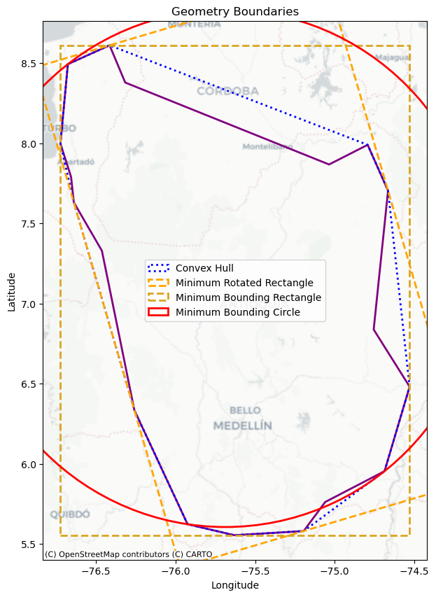
Randomness & Clustering#
from pointpats import distance_statistics, QStatistic, random, PointPattern
coords
array([[-75.43847449, 5.80372897],
[-75.09059702, 6.36553412],
[-75.7080031 , 6.03292199],
[-74.98127311, 6.97769068],
[-75.92459671, 5.62395126],
[-75.71594966, 6.1214303 ],
[-75.10848962, 7.19311041],
[-75.90426747, 6.53570773],
[-76.41478301, 8.61138712],
[-75.95649246, 6.18578361],
[-75.22369249, 7.66515825],
[-75.99351498, 6.42346364],
[-75.29224952, 7.03542947],
[-76.02689633, 6.81495037],
[-74.73354817, 6.33797388],
[-75.63081024, 5.55526547],
[-76.65668414, 7.78916729],
[-75.03501878, 7.86794983],
[-76.63964213, 7.63166564],
[-75.08253096, 6.55008115],
[-75.90014678, 6.05746868],
[-75.78331099, 6.32645515],
[-74.66427699, 7.70463362],
[-75.67837372, 5.88716956],
[-76.33198554, 6.69136668],
[-75.12763646, 6.12338072],
[-75.7497221 , 6.21452562],
[-75.35429023, 5.94043468],
[-75.78300046, 6.72399093],
[-74.72370656, 6.54330091],
[-76.46302608, 7.32954 ],
[-75.19457019, 5.58127531],
[-76.67699198, 8.4937355 ],
[-74.79242149, 7.99046768],
[-75.22350906, 6.23239637],
[-74.5287421 , 6.48192227],
[-74.68408347, 6.13917534],
[-74.68620541, 5.95483902],
[-75.79222753, 6.90100051],
[-74.90720525, 6.19389245],
[-74.97660919, 5.87913421],
[-75.70310727, 6.43830041],
[-76.31664143, 8.379156 ],
[-75.58330371, 5.87898496],
[-75.05934898, 5.76250691],
[-75.74580903, 6.52016455],
[-75.70979974, 5.67375857],
[-75.82871144, 5.87106456],
[-75.79966005, 6.05834997],
[-75.71033059, 7.01369575],
[-76.72380317, 7.99837236],
[-76.13318557, 6.91391687],
[-76.25906482, 6.33534134],
[-75.40094502, 7.26540421],
[-74.75459316, 6.83825032],
[-75.77620117, 5.9559393 ],
[-74.75564986, 6.71687047],
[-74.85848879, 7.4740075 ]])
random_pattern = random.poisson(coords, size=len(coords))
f, ax = plt.subplots(figsize=(9, 9))
plt.scatter(*coords.T, color='k', marker='o', s=12, label='Covid-19 cases CFR > 3')
plt.scatter(*random_pattern.T, color='r', marker='x', s=12, label='Random Pattern')
ctx.add_basemap(
ax, crs="EPSG:4326",
source=ctx.providers.CartoDB.Positron)
ax.legend(ncol=1, loc='center left')
ax.set_title('Covid-19 Cases vs Random Pattern')
plt.show()
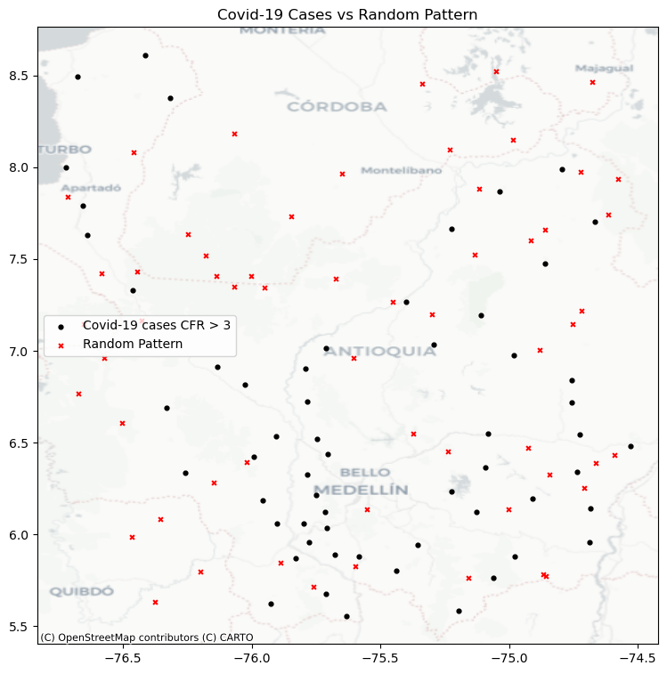
random_pattern_ashape = random.poisson(alpha_shape, size=len(coords))
f, ax = plt.subplots(figsize=(9, 9))
plt.scatter(*coords.T, color='k', marker='o', s=12, label='Covid-19 cases CFR > 3')
plt.scatter(*random_pattern_ashape.T, color='r', marker='x', s=12, label='Random Pattern')
ctx.add_basemap(
ax, crs="EPSG:4326",
source=ctx.providers.CartoDB.Positron)
ax.legend(ncol=1, loc='center left')
ax.set_title('Covid-19 Cases vs Random Pattern')
plt.show()
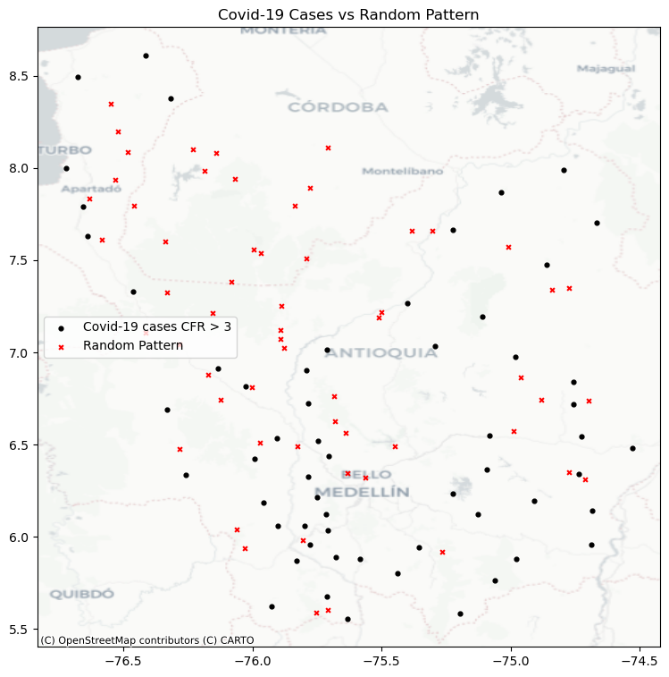
Quadrat Statistics#
qstat = QStatistic(coords, nx=2, ny=2)
qstat.plot()
plt.title("Q Statistic for Covid-19 Cases")
plt.gcf().set_size_inches(10, 10) # manually set figsize
plt.show()
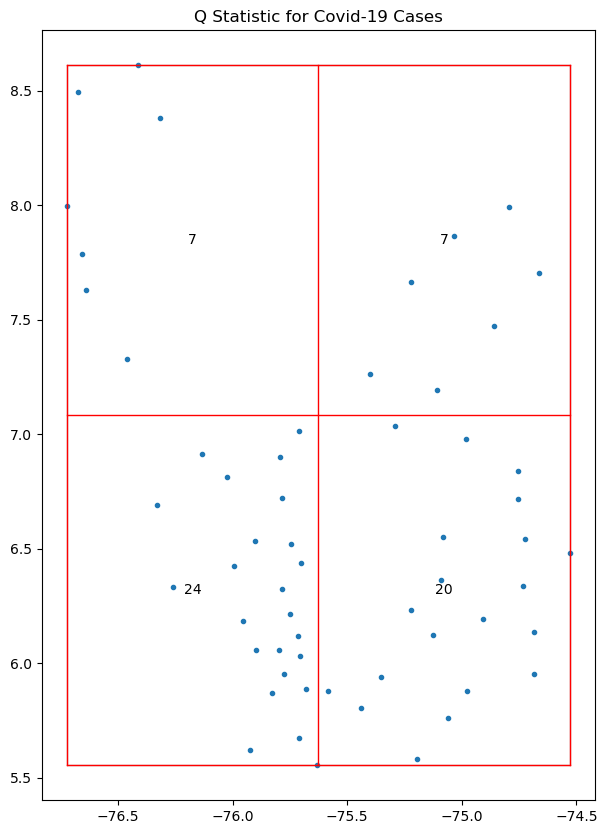
qstat.chi2_pvalue
np.float64(0.001097656029624474)
qstat_null = QStatistic(random_pattern)
qstat_null.plot()
plt.title("Q Statistic for Random Pattern")
plt.gcf().set_size_inches(10, 10) # manually set figsize
plt.show()
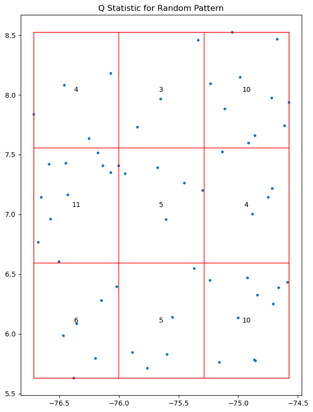
qstat_null.chi2_pvalue
np.float64(0.17407762135254606)
qstat_null_ashape = QStatistic(random_pattern_ashape)
qstat_null_ashape.plot()
plt.title("Q Statistic for Random Pattern (Alpha Shape)")
plt.gcf().set_size_inches(10, 10) # manually set figsize
plt.show()
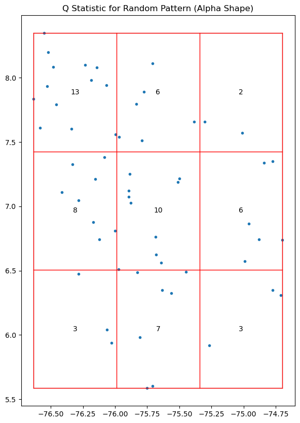
qstat_null_ashape.chi2_pvalue
np.float64(0.04439741847894219)
Ripley’s alphabet of functions#
# this code should be hidden in the book, and only the plot visible!
f,ax = plt.subplots(1,2,figsize=(8,4), sharex=True, sharey=True)
ax[0].scatter(*random_pattern.T, color='red')
ax[1].scatter(*random_pattern.T, color='red',
zorder=100, marker='.', label='Points')
nn_ixs, nn_ds = PointPattern(random_pattern).knn(1)
first = True
for coord, nn_ix, nn_d in zip(random_pattern, nn_ixs, nn_ds):
dx, dy = random_pattern[nn_ix].squeeze() - coord
arrow = ax[1].arrow(*coord, dx,dy,
length_includes_head=True,
overhang=0, head_length=300*3,
head_width=300*3, width=50*3,
linewidth=0, facecolor='k',
head_starts_at_zero=False)
if first:
plt.plot((1e100, 1e101), (0,1), color='k',
marker='<', markersize=10,
label='Nearest Neighbor to Point')
first = False
ax[0].axis([1.554e7, 1.556e7, 4240000, 4260000])
ax[0].set_xticklabels([])
ax[0].set_yticklabels([])
ax[0].set_xticks([])
ax[0].set_yticks([])
f.tight_layout()
ax[1].legend(bbox_to_anchor = (.5,-.06), fontsize=16)
plt.show()
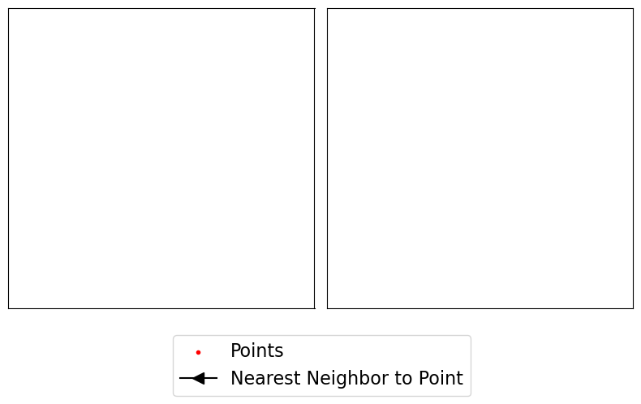
import matplotlib.pyplot as plt
import contextily as ctx
from pointpats import PointPattern
import numpy as np
# Assume you already have coords_3857 from CFR3_points_3857
# Example:
# CFR3_points_3857 = CFR3_points.to_crs(epsg=3857)
# coords_3857 = np.column_stack((CFR3_points_3857.geometry.x, CFR3_points_3857.geometry.y))
coords = coords_3857 # your projected points
# 1. Compute Nearest Neighbors
pp = PointPattern(coords)
nn_ixs, nn_ds = pp.knn(1)
# 2. Create subplots
fig, ax = plt.subplots(1, 2, figsize=(10, 5), sharex=True, sharey=True)
# ---- Panel 1: Points only
ax[0].scatter(*coords.T, color='darkred', alpha=0.7, s=10)
ctx.add_basemap(ax[0], crs="EPSG:3857", source=ctx.providers.CartoDB.Positron)
ax[0].set_title("COVID-19 CFR > 3% Cases")
# ---- Panel 2: Points + Arrows
ax[1].scatter(*coords.T, color='darkred', alpha=0.7, s=10, label='Points')
for coord, nn_ix in zip(coords, nn_ixs):
dx, dy = coords[nn_ix].squeeze() - coord # ✅ FIXED
ax[1].arrow(*coord, dx, dy,
length_includes_head=True,
overhang=0, head_length=900,
head_width=900, width=150,
linewidth=0, facecolor='black',
head_starts_at_zero=False, alpha=0.6)
ctx.add_basemap(ax[1], crs="EPSG:3857", source=ctx.providers.CartoDB.Positron)
ax[1].set_title("With Nearest Neighbor Arrows")
# 3. Clean up axes
for a in ax:
a.set_xticks([])
a.set_yticks([])
a.set_xticklabels([])
a.set_yticklabels([])
a.set_axis_off()
# 4. Legend and layout
ax[1].legend(loc='lower center', bbox_to_anchor=(0.5, -0.1), fontsize=10)
fig.tight_layout()
plt.show()
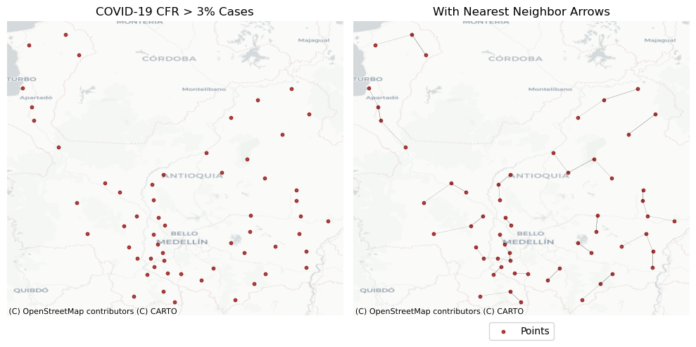
Identifying clusters#
DBSCAN clustering#
from sklearn.cluster import DBSCAN
clusterer = DBSCAN()
clusterer.fit(CFR3_points[["longitude", "latitude"]])
DBSCAN()In a Jupyter environment, please rerun this cell to show the HTML representation or trust the notebook.
On GitHub, the HTML representation is unable to render, please try loading this page with nbviewer.org.
DBSCAN()
clusterer.core_sample_indices_[:5]
array([0, 1, 2, 3, 4])
clusterer.labels_[:5]
array([0, 0, 0, 0, 0])
lbls = pd.Series(clusterer.labels_, index=CFR3_points.index)
f, ax = plt.subplots(figsize=(10, 10))
noise = CFR3_points.loc[lbls == -1, ["longitude", "latitude"]]
ax.scatter(noise['longitude'], noise['latitude'], c='grey', s=10, linewidths=0)
ax.scatter(CFR3_points.loc[CFR3_points.index.difference(noise.index), 'longitude'],
CFR3_points.loc[CFR3_points.index.difference(noise.index), 'latitude'],
c='red', linewidths=0)
ctx.add_basemap(
ax, crs="EPSG:4326",
source=ctx.providers.CartoDB.Positron)
ax.set_axis_off()
plt.show()
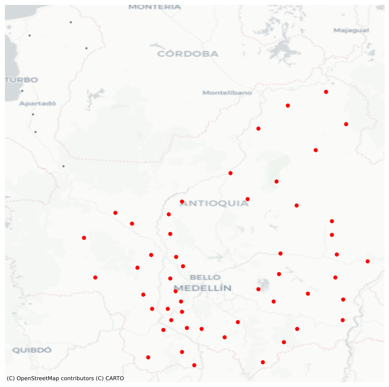